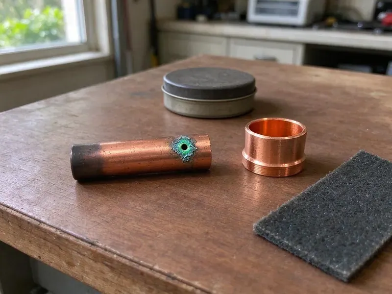

Slab Leak Repair in Mandeville, LA
Hot spot on the tile and a gas bill that jumped? Odds are the hot water line under the slab has a pinhole. Beau's Plumbing finds it in Mandeville, LA.
- Quick Leak Locating
- Post-Tension Slab Safe
- Insurance Claim Support
- Upfront Pricing

Fix Your Slab Leak Without Tearing Up the Whole House in Mandeville, LA.
Call today for slab leak detection and a written comparison of spot repair and reroute pricing.
Prompt Slab Leak Repair in Mandeville, LA for Hot and Cold Water Lines
Beau's Plumbing finds slab leaks with the floor still intact. Hot and cold get tested apart. Then a ground microphone and thermal camera narrow it down to about a foot, so the cut usually costs you a tile or two.
Some of what we do:
- Electronic leak locating and thermal imaging
- Attic reroutes and PEX repiping
- Clean concrete cutting and patching

Additional Plumbing Repair Services in Mandeville, LA
We offer expert plumbing repair services across Mandeville, LA to fix leaks, restore flow, and keep your system running smoothly.


Customers
Why Choose Beau's Plumbing for Slab Leak Repair in Mandeville, LA?
Hard slab leaks need a trained eye, like a quiet cold-side pinhole under carpet. Our plumbers practice reading slow gauge drops, which saves you from paying for the wrong repair.
- Pinpoint Locating, Acoustic and thermal equipment finds the break under your floor, which avoids digging around to find it.
- Clear Comparisons, You see the cost of each repair option next to each other.
- Modern Gear, Our technicians use current leak detection equipment to find hidden leaks with minimal mess.
Citywide Coverage
Every neighborhood in Mandeville is on our route for slab leak repair. Location doesn't change the price. A slab leak wets more ground each hour, so we schedule it fast instead of a week out like a dripping faucet.
Experienced Team
Licensed plumbers on our crew have years of slab leak work behind them in homes common across Louisiana. They know the building styles. Training covers safety and repair methods each year, from radar scans before cutting to compaction after, since the patch counts as much as the pipe.
Safety-First Approach
Safe job sites protect your home and family. Saws run wet to hold dust. We control dust, kill power to nearby circuits before cutting and meet or exceed code on every job. That is the Louisiana standard.
Trusted Certified Mandeville Plumbing Services Professionals
At Beau's Plumbing, we take pride in licensed, certified plumbing services throughout Mandeville, LA. Those papers on the wall mean something. Every repair, install and maintenance visit follows strict safety and quality rules, and the plumbers doing the work carry recognized industry credentials.
Call Us Now PHCC Plumbing Contractor Recognition
PHCC Plumbing Contractor Recognition Better Business Bureau (BBB) Accreditation
Better Business Bureau (BBB) Accreditation Angi Certified Pro
Angi Certified Pro ISO 9001 Quality Management Certification
ISO 9001 Quality Management CertificationSlab Leak Detection and Repair in Mandeville, LA
Slab Leak Repair Cost Comparison in Mandeville, LA
A spot repair costs least up front. Then add the flooring. A reroute runs a bit more but avoids concrete and future leaks on that run, and a repipe fits homes with repeated leaks or aging copper everywhere. You get written prices for each.

Ground Radar and Acoustic Locating in Mandeville
Ground-penetrating radar shows what is inside the slab before we cut. Radar maps steel in the concrete. Paired with acoustic listening gear, it lets us mark a leak in copper, PEX or galvanized pipe even near busy roads, because the radar fixes the pipe route and the mic confirms the leak. We use both in Mandeville.
Slab Leaks in Stores and Offices in Mandeville
Retail stores, offices and restaurants on slabs develop the same leaks as houses. Tenants notice right away. We locate and repair commercial slab leaks with as little disruption as we can manage, often after hours, and we provide written documentation with photos for property managers and insurers.
Spot Repair Through the Slab in Mandeville, LA
Spot repairs fit leaks in otherwise good pipe. It is a single small opening. The floor gets opened, the pipe replaced and tested, and the trench compacted and patched, ready for your flooring contractor.
Cold Water Slab Leak Repair in Mandeville
Cold leaks don't make warm spots. Watch the bill instead. They show up as a higher bill, a meter that turns with every faucet off, or a patch of carpet that stays damp, and they soak the soil just as much as hot leaks do. Your Mandeville home is no exception. We isolate the cold line and repair or reroute it.
Slab Leak Pipe Rerouting in Mandeville
A reroute abandons the leaking pipe under the slab. New line goes overhead. For older Mandeville homes, this works well with aging copper or galvanized pipe, since it bypasses every foot of buried line on that run. We keep drywall cuts small at fixture walls.
Hot Water Slab Leak Repair in Mandeville, LA
Hot lines leak under slabs more than cold lines. Expansion wears them out. The pipe swells and shrinks against rock every time hot water flows, and a recirculation pump keeps that going constantly, thinning the wall. We repair or reroute the line and can set the recirculation pump on a timer.

Direct Slab Penetration Repair in Mandeville, LA
Cutting through the slab is the shortest path to a localized leak. We wet-cut to keep dust down. After repairing the pipe, we compact the fill and patch the opening so the floor carries load like it did before, and the whole job follows plumbing code from cut to cure. Louisiana rules apply throughout. Your Mandeville home stays clean at the end.
Slab Leak Plumbers Near You in Mandeville, LA
People who search slab leak repair near me usually have a warm floor, a high bill or the sound of running water. We bring the equipment. Before we leave, you'll know which line is leaking, where it is and what each repair costs in writing.
Local plumbing has local habits. Each era of homes was plumbed its own way. We know which subdivisions used copper under the slab and which used PEX, so we can guess the failure before testing starts. That is local Mandeville knowledge.
Beau's Plumbing at a Glance
- Fully licensed plumbing team covering Mandeville, LA
- Same-day appointments and 24/7 emergency response
- Clear written estimates, no hidden fees
- 4.8-star rated by 578+ Louisiana customers
Mandeville Map
Mandeville Information
- Population
- 12,999
- Area codes
- 985/225/504
- Service area
- Mandeville and communities within 40 miles
- Nearby
- Slidell, Hammond, New Orleans, Metairie
Water lines under a slab in Mandeville, LA ride on ground that shifts, and every shift flexes the pipe where it passes through concrete. Much of Louisiana sits on soft, expansive clay that swells and shrinks with moisture, which can shift slabs and crack buried pipes.
Expert Services
Call Beau's Plumbing for reliable plumbing work done by licensed pros in Mandeville, LA.
Our Specialized Plumbing Services in Mandeville, LA
At Beau's Plumbing, you get every kind of plumbing service from one company across Mandeville, LA. We go from leak detection all the way to full system installations, for homes and commercial buildings, and we do it quickly at a fair price. Here are the core services we offer:


How Slab Leak Repair Works in Mandeville, LA
We test, locate, quote and repair, in that order, every time.
Request a Quote
Call (504) 317-6869 and describe what you see or hear, such as warm floors, a high bill or running water sounds. We schedule detection promptly.
Locate the Leak
We isolate lines, pressure test and pinpoint the leak with acoustic and thermal tools. Then we explain repair and reroute options with prices.
Repair or Reroute
We do the work you picked and pressure test the system. We patch concrete or drywall openings and verify the leak is fixed.
Frequently Asked Questions About Slab Leak Repair in Mandeville
Most slab leak repairs in Mandeville, LA land between $1,000 and $5,000. Access drives the price. A direct repair in an open room sits at the low end, while a long reroute or a tunnel under a wall runs toward the top of that range or beyond it. You get a clear number first.
Every repair carries our written workmanship warranty, and pipe and fittings carry the manufacturer's. We go over coverage before starting.
Locating usually takes one to three hours. A spot repair or reroute generally takes one to two days after that.
Yes, our slab leak repairs carry a warranty. We go over it first. The specific coverage depends on the repair method and the pipe used, and we review it with you before any work begins so there are no surprises later.
Larger jobs often need one. Small fixes usually don't. A reroute, a main line change or structural work usually needs a plumbing permit, and we handle the application. Beau's Plumbing meets the inspector too.
Pipe in good shape with an easy-to-reach leak can take a spot repair. Old pipe or a history of leaks points toward a reroute.
Policies vary, but many cover damage from a sudden slab leak. The pipe often isn't covered. Insurers tend to pay for access and resulting damage like flooring and drywall, so call your provider right away and ask, and we can supply photos and a written report for the claim.
This is not a weekend project. You need specialized gear. A wrong guess on location means cutting the slab twice, and a poor joint under concrete can fail, soak the soil and break plumbing code. In Mandeville it may also void a home warranty.
Hear From Customers Who Hired Our Plumbing Experts

Angela D.
Our sump pump quit during a storm and the water was an inch from the basement carpet. Beau's Plumbing put in a new pump with a battery backup that same evening. We have had two heavy rains since. It kicked on both times.
Sump Pump · Kenner, LA
Jessica T.
We were adding a gas range in a kitchen remodel and needed a new line run from the meter. The plumber pulled the permit, ran the pipe through the crawl space, and had it inspected and approved within the week.
Gas Line Repair · Marrero, LA
Kevin O.
Before buying our house I paid for a sewer camera inspection. Beau's Plumbing found a belly in the line that held standing water about forty feet from the cleanout. We used the video to get the sellers to fix it before closing.
Sewer Camera Inspection · Marrero, LA
Tyler J.
We bought a taller comfort height toilet for my dad, who just had knee surgery. The plumber pulled the old one, found the flange was cracked, and replaced it before setting the new bowl. Took about two hours.
Toilet Installation · Marrero, LARobert G.
The camera showed a full break in our clay sewer line near the street. Beau's Plumbing replaced it with a trenchless pipe burst, so the only digging was two small pits in the yard. They let us watch the footage before and after.
Sewer Line Replacement · New Orleans, LA
Emily R.
The shutoff valve under our kitchen sink snapped off in my hand on a Sunday morning. Beau's Plumbing had someone out by early afternoon. He replaced both angle stops with quarter turn valves and showed me where our main shutoff was, which I honestly did not know.
Plumbing Repair · Metairie, LA